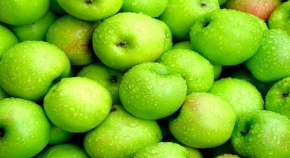

Ekşi Elmalar

Vaktiyle, yemyeşil bir dağ yamacına kurulmuş şirin bir köyde, yoksul bir aile yaşıyordu.
Baba, her gün erkenden kalkar, tek çocuklarına ekmek parası bulabilmek için minicik bahçesinden topladığı
domatesleri ihtiyar atına yükler ve kasabanın pazarına giderdi. Pazarda, domateslerden kazandığı üç-beş kuruşla da evinin
ihtiyaçlarını alır ve akşam olunca köye dönerdi. Küçük çocuk, babasını çok severdi. Annesi onu sık sık kucağına alır:
- Baban çok akıllıdır yavrucuğum... derdi.
O ne yaparsa bizim iyiliğimiz için yapar. Bugüne dek yanlış bir işe giriştiğini görmedim.
O yaz, çok kurak geçmişti. Evin önündeki minik bahçenin toprağı susuzluktan kavrulmuş, yer yer çatlamıştı. Kuraklık nedeniyle,
bahçedeki domatesler de daha kızarmadan çürüyüp dalında koptuğu için yoksul aile, ekmek parası bulamaz hale gelmişti. Bir gün baba,
düşündü, taşındı, en sonunda ihtiyar atını pazara götürüp satmaya karar verdi.
- Belki ihtiyar hayvanın karşılığında daha yararlı bir şeyler alabilirim,
diye düşünüyordu.
Ertesi sabah, karısı onu evden uğurlarken:
- İyi bir alışveriş yapacağından eminim, sen akıllısın, diyordu.
Yoksul baba,
atının üzerine binmiş, yavaş yavaş pazara gidiyordu. Tam kasabaya yaklaştığı sırada, ineğini önüne katmış pazara götüren bir köylüye rastladı.
Baba:
- Merhaba arkadaş! Diye bağırdı. İneğim satmaya gö-türüyorsun galiba...
- İyi bildin! Diye karşılık verdi öteki.
- Ben de atımı satacaktım.
Dilersen senin inekle benim atı değiştirelim. Aslında bir at, bir inekten daha değerlidir ama ben razıyım. Hiç olmazsa her sabah taze süt içeriz,
ne dersin?
Köylü biraz düşündükten sonra bu alışverişe razı oldu. Yoksul baba, ineği alarak, sevine sevine evinin yolu tuttu. Baba önde, inek arkada,
hızlı hızlı yürüyorlardı. Daha yarı yola gelmemişlerdi ki, karşı yönden, besili, kabarık tüylü koyununu pazara götüren bir köylüye rastladılar.
Yoksul baba, o anda, yeni bir alışveriş yapmaya karar verir. Bir yandan da düşünüyordu.
- Bu koyun, inekten daha genç görünüyor. Üstelik bizim köyün yamacında da bol ot vardır. Koyun, yaz boyunca orada otlar, kış gelince de onu içeri alırız.
Üstelik bol süt de verir.
Biraz sonra pazarlık yapılmış, inekle koyun değiştirilmişti. Yoksul baba, sevinçle:
- İyi bir alışveriş yaptım, diye düşünüyordu.
Köye, iyiden iyiye yaklaşmışlardı. Birden, karşıdan koltuğunun altında besili bir kaz taşıyan köy bakkalının geldiğini gördüler. Bakkal, kazını satmaya götürüyordu.
Yoksul baba, kendi kendine:
- Hiç bu kadar besili bir kaz görmemiştim, diye düşündü. Bizim evin yakınındaki küçük bataklık da tam ona göre...
Sonra bahçedeki sebzelerin kabuklarını da yer. Karım çok sevinecek, en iyisi ben koyunla kazı değiştireyim. Hemen pazarlığa tutuştular. Sonunda yoksul baba,
kazı önüne katarak, köyün yolunu tuttu. Köye girmek üzereydiler. Yoksul baba, kazını sevinçle evine doğru götürürken, komşu çiftliğin sahibiyle karşılaştı.
Adamın koltuğunun altında, güzel görünüşlü, kısa kuyruklu besili bir tavuk vardı. Baba:
- Ne güzel bir tavuk! Diye kendi kendine mırıldandı. Böyle bir tavuğum olsaydı,
yemini hep kendisi bulurdu. Sonra sık sık kuluçkaya yatar bize minik civcivler de verirdi. Şu kazla tavuğu değiştirsem mi acaba? Yoksul baba kararını vermişti.
Çiftlik sahibi de bu alışverişe hiç nazlanmadı. Baba, biraz sonra koltuğunun altında tavuğu eve doğru yürüyordu. Ev karşıdan görünmüştü. Yoksul baba kendisini
yorgun hissediyordu.
- Bugün iyi bir alışveriş yaptım, diye düşündü. Şu tavuğa karım kimbilir ne kadar sevinecek. Hem o demez miydi, sen akıllı bir adamsın diye...
Gerçekten de akıllıyım galiba. O ihtiyar at, artık hiçbir işe yaramıyordu. Ama bu tavuktan hem yumurta alacağız hem de civciv çıkaracağız.
Canımız isteyince de keser yeriz. Tam o sırada, komşu meyve bahçesinin sahibi, elinde bir torbayla yaklaşıyordu. Torbanın içinde
ağaçtan henüz topladığı yemyeşil ekşi elmalar vardı. Yoksul baba, komşu bahçenin sahibini görünce, düşünmeye başladı.
- Ne kadar da çok elma var o torbada! Keşke karıma böyle bir torba dolusu elma götürseydim. Bizim küçük bahçede hiç elma ağacı yok.
hem olsa da böyle kurak bir bahçede kaç tane elma yetişebilir ki? Kaldı ki, bizim çocuk da ekşi elmayı çok sever. Ne yapsam acaba?
Andersen’den Masallar
Yoksul baba düşünceler içinde yürürken, bahçe sahibi de yanma yaklaşıyordu. Bahçe sahibi, yoksul babayı görünce:
- Merhaba komşu, diye onu selamladı.
Hayrola, pazardan mı geliyorsun?
- Pazardan geliyorum, diye karşılık verdi yoksul baba. Sonra da yaptığı alışverişi tek tek komşusuna anlattı.
Bahçe sahibi bu alışverişe çok şaşırmıştı.
- Torbadaki elmalar çok hoşuna gitti galiba, diye atıldı. Dilersen, elindeki tavukla bunu değiştiririm. Baba biraz düşündü.
- Pekâlâ, diye karşılık verdi. Sonra da, bir torba dolusu ekşi elmayı kaptığı gibi, evin yolunu tuttu. Anne, kocasının yolunu gözlüyordu. Bir yandan,
küçük çocuğunun saçlarını okşuyor, bir yandan da:
- Göreceksin baban sana neler getirecek... diyordu. Babalar hiç yanlış iş yapmazlar. Yaptıkları
iş yanlış gibi görünse bile, sonunda doğru çıkar. Küçük çocuk, pencereye doğru giderek: - Ama anne benim karnım acıktı, dedi. Babam da nerede kaldı?
Bir an önce gelse de, atın karşılığında aldıklarını bize gösterse. Belki yiyecek bir şeyler de almıştır. Tak! Tak! Tak! Kapı çalınıyordu. Anne,
oturduğu yerden kalkarak kapıyı açmaya gitti. Küçük çocuk da sevinçle yerinde zıplamaya başlamıştı.
- Yaşasın babam geldi! Kimbilir bana neler getirdi! Kapı açıldı. Yoksul baba yorgun bir halde içeri girdi. Elinde bir torba vardı. Küçük çocuk hemen atıldı.
- Hoş geldin babacığım, bize ne getirdin? - Bir torba dolusu ekşi elma yavrucuğum.
- Ekşi elma mı? Küçük çocuk düş kırıklığına uğramıştı. Oysa ki, onun karnı acıkmıştı.
- Aç karnına ekşi elmayı ne yapacağım? diye düşündü. O anda anne atıldı:
- Baban böyle bir alışveriş yapmayı uygun görmüş yavrucuğum. Unutma, babalar ne yaparsa yanlış değildir.
Sonra da hep birlikte sofranın başına oturup, ekşi elmalardan yemeye koyuldular. Bu sırada, ülkenin kralıyla kraliçesi, çevrede bir gezintiye çıkmışlardı.
Yanlarında yardımcıları da vardı. Uzun zamandan beri at sirtodaydılar. Güzel bir dağ yamacına yaklaştıkları sırada, Kraliçe Kral'a dönerek:
- Ne kadar da yoruldum... diye yakındı. Üstelik susadım da:
Kral, biraz ötedeki bir pınarı göstererek:
- Şurada su var diye karşılık verdi. Dilersen oradan içebilirsin. Kraliçe pınara şöyle bir baktı.
- Hayır benim susuzluğum su içmekle geçmez. İçim öyle yanıyor ki... Benim canım şöyle kütür kütür ekşi elma istiyor.
- Ekşi elma mı? Kral durmuş sağına soluna bakıyordu. Yanındakiler de onunla birlikte durmuşlardı. Ne yazık ki, hiç kimsenin yanında ekşi elma yoktu.
Çevrede de elma ağacı görünmüyordu. Bu sırada Kraliçe: - Ekşi elma isterim, diye direniyordu. Bir ekşi elmaya on kese altm vereceğim. Bana ekşi elma bulun!
'. Yardımcılardan birisi bağırdı.
- Bakın bakın, şurada yoksul bir köy evi var! Oraya soralım, belki ekşi elmaları bulunur.
Bu, yoksul baba ve ailesinin yaşadığı evdi. Anneyle baba, kapı çalınıp da,
karşılarında kral ve kraliçeyi görünce ne yapacaklarını şaşırdılar. Kraliçe ise, sofrada ekşi elmaları
görmüş ve çok sevinmişti. Kral'la Kraliçe, o gün akşama kadar yoksul aileye konuk oldular. Kraliçe, bol bol ekşi elma yedi.
Akşam, saraya dönerken, yoksul aileye söz verdiği gibi on kese altın bırakmıştı. Anne, Kral'la Kraliçe'yi uğurlarken:
- Babalar hiç yanlış yapmaz, diye mırıldandı.